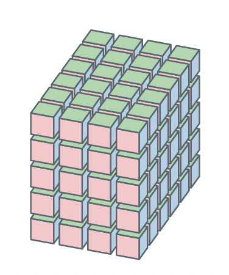

mLF in a nutshell
Forewords
The code provided in is given for open science purpose. Its principal objective is to accompany the SIAM Review paper / arXiv paper by the authors, thus aims at being educative rather than industry-oriented. Evolutions (numerical improvements) may come with time. Please, cite the reference if used in your work and do not hesitate to contact us in case of bug of problem when using it.
Moreover, for more numerically robust and involved implementation and features, we invite reader and users to refer to the MDSPACK library by MOR Digital Systems.
Dependencies
MATLAB R2023b or later (tested on this version)
Toolboxes: "Symbolic Math Toolbox" may be used for some functionalities
Data, tensor and Loewner framework

Model as a multivariate rational functions